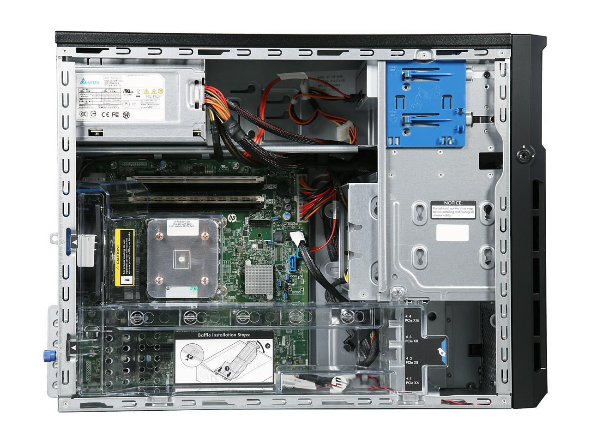
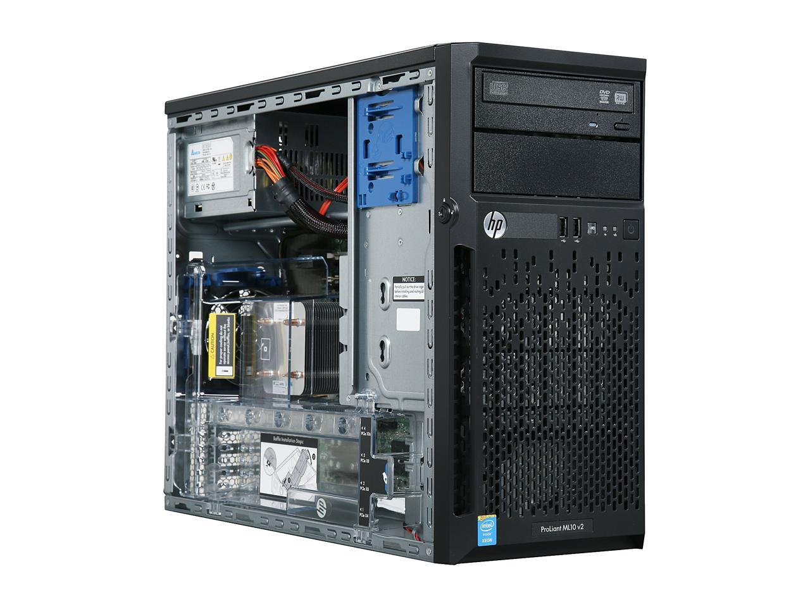
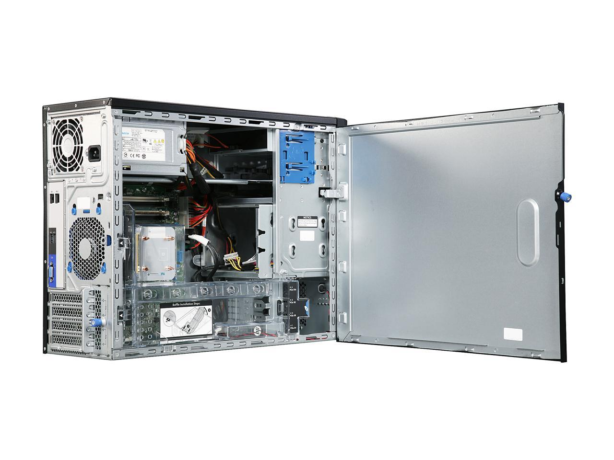
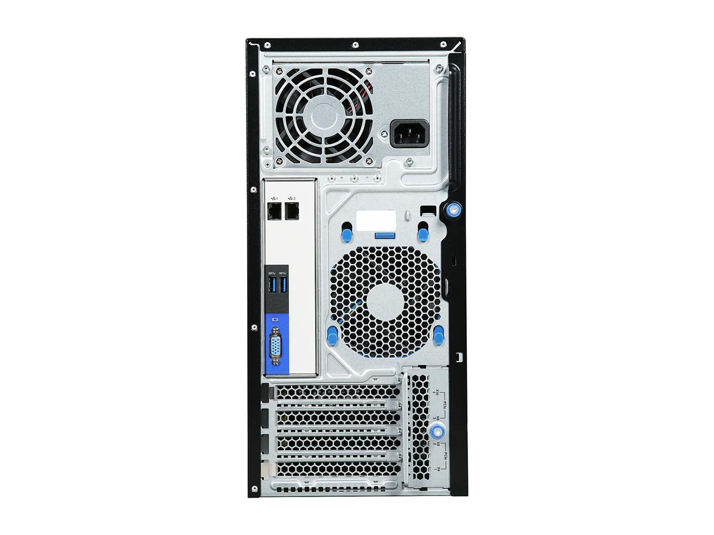

Code <<
Previous Next >> Win10
Server
若我們讀一下 CONCEPTION OF A DIGITAL TWIN IN MECHANICAL ENGINEERING – A CASE STUDY IN TECHNICAL PRODUCT DEVELOPMENT 這篇文章. 應該不難體會傳統的機械工程領域應該要置入大量的 IT 科技, 朝向能應用於整個產品生命週期的 Digital Twin 架構邁進.
Digital Twin is defined as "a virtual dynamic representation of a physical system, which is connected to it over the entire life cycle for bidirectional data exchange." (Trauer et al., 2020)
The term of a Digital Twin is part of a broader context and is located at the intersection of the three
research areas virtual product development, cyber-physical systems and product lifecycle
management. (Grieves and Vickers, 2017).
針對能夠應用於網際內容管理課程使用的 HPE_ProLiant_ML_10_v2_Server.pdf 伺服器, 除了解電腦硬體規格與配置外, 還需在實體操作系統與虛擬操作系統中安裝設定網際內容管理系統, 包括 cmsimde 動態與靜態網站, 以及 Fossil SCM server.
IT 技術:
操作系統: Windows 10 21H2 + WSL, Ubuntu 22.04
MSYS2: https://www.msys2.org/
CMake: https://cmake.org/
Putty: https://www.putty.org/
Git: https://git-scm.com/download/win
WWW server: nginx.org
Proxy: https://www.stunnel.org/
NSSM: https://nssm.cc/
Fossil SCM: https://www2.fossil-scm.org
Flask: https://flask.palletsprojects.com/en/2.1.x/
Python: https://www.python.org/
uwsgi: https://uwsgi-docs.readthedocs.io/en/latest/
Oauth2: https://oauth.net/2/
Google API: https://cloud.google.com/apis/docs/overview
fossilapp: https://github.com/mdecycu/fossilapp
fossiloauth: https://github.com/mdecycu/fossiloauth
Heroku: https://www.heroku.com/
CAX:
NX: NX12、NX1980、NX2008 - NXOpen Python API
Solvespace: https://solvespace.com
CoppeliaSim: https://coppeliarobotics.com/
Webots: https://cyberbotics.com/
Range3: https://github.com/Range-Software/range3
NGSolve: https://ngsolve.org/




Code <<
Previous Next >> Win10